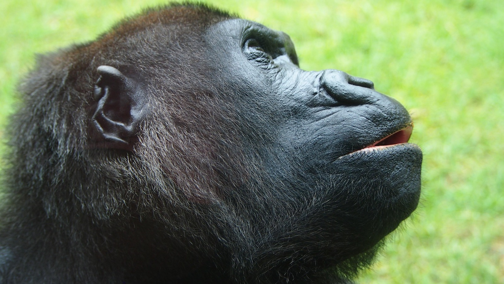

<html>
<head>
    <title>Menú Desplegable</title>
    <style>
          
    body { font-family: Arial, sans-serif; }
    
    .menu { margin: 0; padding: 0; list-style: none; }
    .menu li { float: left; position: relative; width: 150px; background-color: #333; }
    .menu li a { display: block; padding: 15px; color: white; text-decoration: none; text-align: center; }
    .menu li a:hover { background-color: #555; }

    .submenu { display: none; position: absolute; top: 100%; left: 0; margin: 0; padding: 0; list-style: none; }
    .submenu li { background-color: #444; width: 100%; }
    
    .menu li:hover > .submenu { display: block; }
 
    </style>
</head>
</html>
<body>

    <ul class="menu">
        <li><a href="#">Peces</a>
            <ul class="submenu">
                <li><a href="https://www.fishipedia.es/pez/betta-splendens">Pez Betta</a></li>
                <li><a href="https://www.fishipedia.es/pez/holacanthus-ciliaris">ángel reina</a></li>
                <li><a href="https://www.fishipedia.es/pez/hyphessobrycon-eques">Tetra serpae</a></li>
                <li><a href="https://www.tomscatch.com/es/especies-de-peces/marlin-blanco-11">Marlin Blanco</a></li>
                <li><a href="https://www.fishipedia.es/pez/hyphessobrycon-erythrostigma">Megalamphodus</a></li>
            </ul>
         </li>
        <li>
            <a href="#">Mamiferos</a>
            <ul class="submenu">
                <li><a href="gorila.html">Gorila</a></li>
                <li><a href="lemur.html">Lemur</a></li>
                <li><a href="caballo.html">Caballo</a></li>
                <li><a href="armadillo.html">Armadillo</a></li>
                <li><a href="reno.html">Reno</a></li>
            </ul>
        </li>
        <li><a href="#">Anfibios</a>
            <ul class="submenu">
                <li><a href="anfi2.html">Anfibios</a></li>
            </ul>
        </li>
        <li><a href="#">Aves</a>
            <ul class="submenu">
                <li><a href="https://www.nationalgeographicla.com/animales/loros">Loro</a></li>
                <li><a href="https://www.faunia.es/planea-tu-visita/animales/tucan-toco">Tucan Toco</a></li>
                <li><a href="https://deanimalia.com/selvaaguilafilipina.html">Águila Monera</a></li>
                <li><a href="https://aveschile.cl/picaflor-2/">Colibrí de Arica</a></li>
                <li><a href="https://laberintoenextincion.blogspot.com/2009/10/maca-tobiano.html">Macá Tobiano</a></li>
            </ul>
         </li>
         <li><a href="#">Reptiles</a>
        <ul class="submenu">
                <li><a href="coco.html">Cocodrilo De Agua Salada</a></li>
                <li><a href="torta.html">Tortuga gigante de galapagos</a></li>
                <li><a href="komodo.html">Dragon De Komodo</a></li>
                <li><a href="cama.html">Camaleon</a></li>
                <li><a href="ser.html">Serpiente De Cascabel</a></li>
            </ul>
         </li>
         <li><a href="index.html">Menu Principal</a>
         </li>
    </ul>
<pre>


</pre>
</body>
</html>

<html>
<head>
<title>GORILLA</title>
</head>
<body background="jun.jpg" text="white">
<center><font size="9" color="6EE653"><b>GORILA</b></font></center>
<center><h3><font color="red">(Gorilla gorilla gorilla.)</font></h3></center>
<center></center>
<center><h4>El gorila habita principalmente en las densas y frondosas selvas tropicales de África central y ecuatorial, donde las altitudes pueden variar desde los bosques de tierras bajas hasta las
frías y neblinosas selvas de montaña. Su estilo de vida es marcadamente social y se organiza en grupos familiares cohesionados, conocidos como tropas, que son liderados por un macho
dominante de espalda plateada encargado de la protección y la toma de decisiones. Estos primates son mayoritariamente herbívoros y dedican gran parte de su día a desplazarse por el suelo
del bosque buscando tallos, brotes de bambú y frutas, manteniendo una rutina tranquila que se complementa con largos periodos de descanso y una interacción constante entre los miembros 
del grupo para fortalecer sus vínculos. Aunque poseen una fuerza imponente, su comportamiento suele ser pacífico y retraído, construyendo cada noche nuevos nidos de ramas y hojas en el suelo o en árboles bajos para pernoctar de manera segura antes de reanudar su búsqueda de alimento al amanecer.</h4></center>
<center><h3>CARACTERISTICAS</h3></center>
<ol type="1" align="left">
 <li>Dimorfismo sexual marcado: Los machos son significativamente más grandes que las hembras, llegando a pesar hasta 200 kg, y desarrollan el característico pelaje plateado en la espalda al alcanzar la madurez.</li>

<li>Dieta herbívora especializada: Consumen grandes cantidades de vegetación, incluyendo brotes, tallos de bambú, cortezas y frutas, lo que requiere un sistema digestivo robusto para procesar la fibra.</li>

<li>Estructura social jerárquica: Viven en grupos estables liderados por un "espalda plateada", quien es responsable de la seguridad del grupo y de mediar en los conflictos internos.</li>

<li>Locomoción sobre los nudillos: Aunque pueden caminar erguidos por distancias cortas, su forma principal de desplazamiento es el "knuckle-walking", apoyando el peso en los nudillos de sus extremidades anteriores.</li>

<li>Alta inteligencia y uso de herramientas: Poseen capacidades cognitivas complejas, demostrando el uso de ramas para medir la profundidad del agua o piedras para procesar alimentos en su entorno natural.</li>
</ol>

</body>
</html>